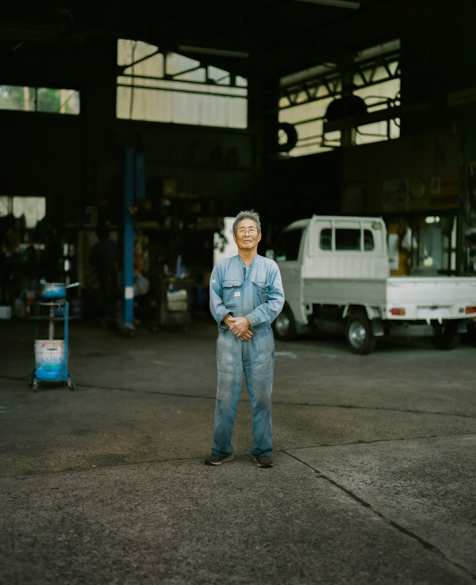
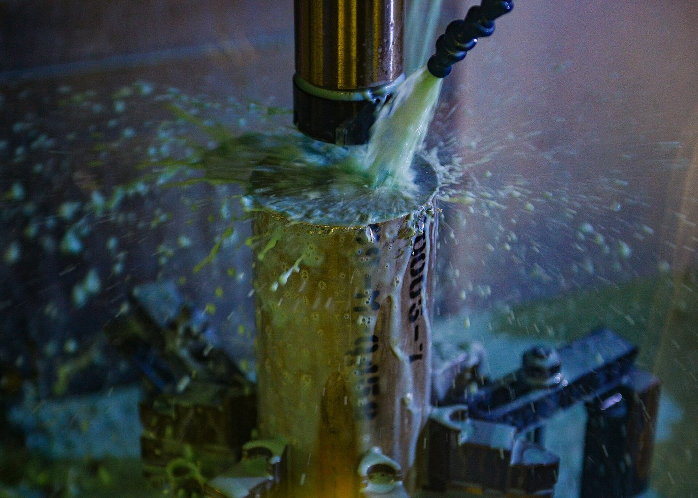
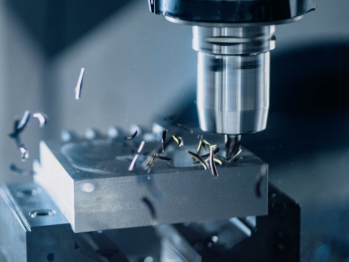
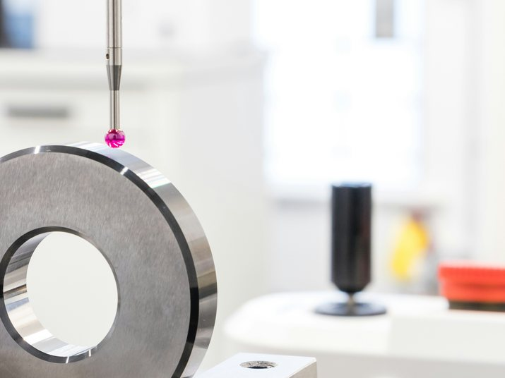
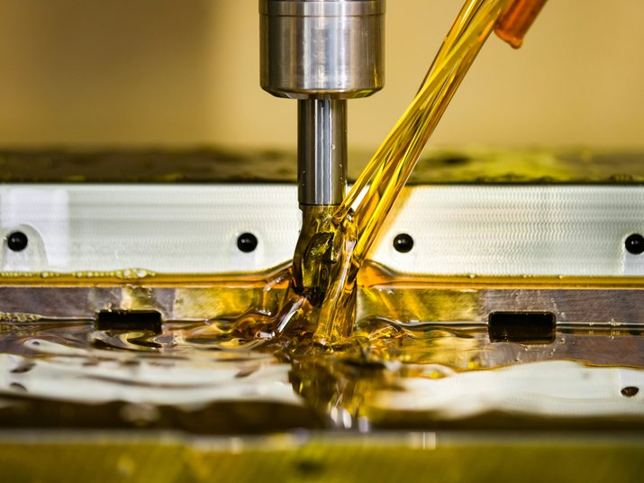
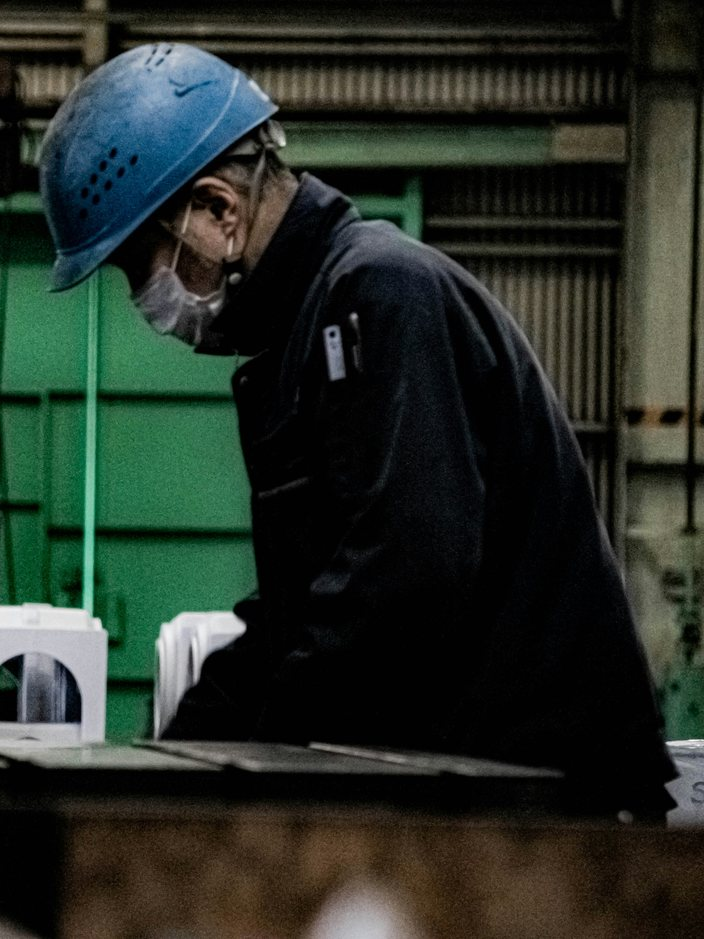
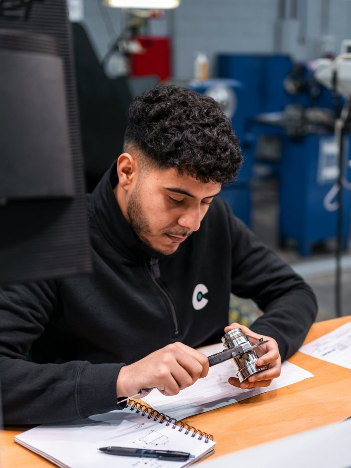
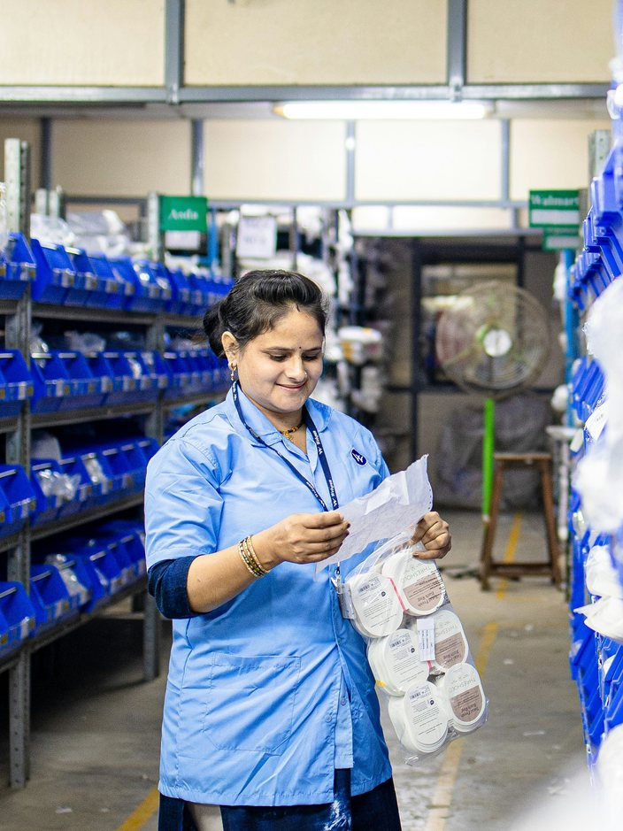
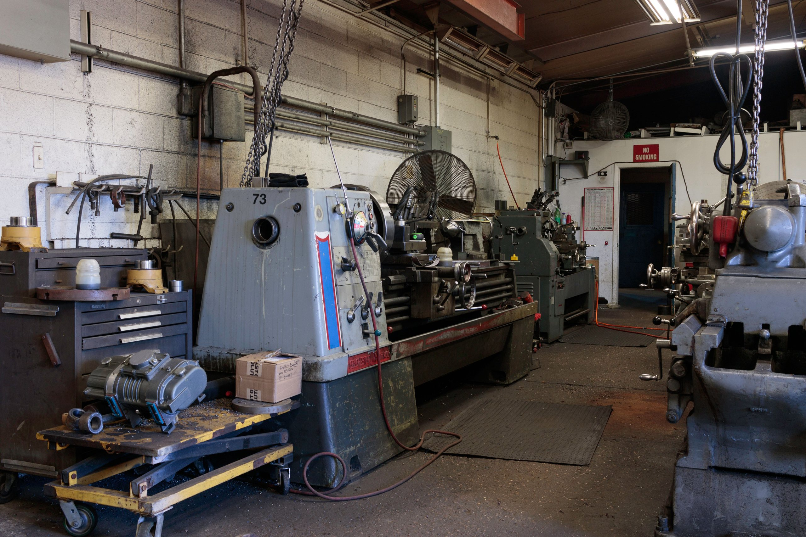

旋盤工、求む。
経験は問いません。
工場見学日のお知らせ
見学のご案内へ →
Message建設機械の動きを
支えて58年。
桑水流精機は、磐田で生まれた町工場です。ピストンやブッシュをはじめ、多くの部品を旋盤で加工しています。扱うのは小さな部品が多いですが、これらの部品が無いと建設機械のアームは動きません。
旋盤で加工する先輩たちは、多くが未経験からのスタートです。少人数の会社ですので、1人が受け持つ仕事の幅は決して狭くはありませんが、成長をいち早く感じられると思います。少しでも関心があれば、一度工場見学で職場の雰囲気を直接感じていただきたいと思っております。
代表取締役桑水流 徹

Work多品種・小ロットの
機械加工
ひと月に作るのはおよそ4万個（2024年度の平均）。1回の段取りで削るのは、50個から200個の小ロットが大半です。品番がたびたび変わるので、次の品番に合わせて刃物と治具を替える段取り替えが、1人あたり1日に1〜2回あります。
慣れれば1人で3台を受け持ち、1台が削っている間に別の機械の段取りをします。同じ作業だけで終わる日はありません。



Number数字で見る桑水流精機
創業
1968年
磐田の同じ土地で58年。
従業員数
34名
加工14名、検査6名、生産管理・営業・総務ほか14名。
未経験からの入社
9名／加工14名中
前職は介護、運送、飲食などです。
年間休日
122日
残業
11時間／月平均
いちばん多い月でも25時間でした。
有給取得
13.2日／年平均
従業員数と未経験からの入社人数は、2026年8月時点です。年間休日・残業・有給取得は、2024年度の全社員の実績です。
People先輩の声

加工｜2022年入社｜前職／介護
機械の音の違いが、少しずつ分かってきました
前の仕事は夜勤のある介護で、生活のリズムを整えたくて転職しました。最初の3か月は、機械の音がぜんぶ同じに聞こえていました。隣にはいつも先輩がいて、分からないことはその場で聞けました。いまは刃が欠ける前の音が分かります。

加工｜2023年入社｜前職／運送
機械を1台ずつ、自分のものに。
運送の仕事で腰を痛めて、重いものを運ばない仕事を探していました。見学で削りたての部品を手に取って、ここに決めました。2台目を任されたのは、入社して1年たってから。もっと早く覚えろと急かされると思っていたので、拍子抜けしました。4年目のいまは3台を受け持っています。

検査｜2021年入社｜前職／組立
3交替から、日勤の毎日へ。
前の工場の組立は3交替でした。いまは日勤なので、平日の夜も家族との時間が持てます。検査の仕事を始めたころは、測定具の当て方が安定せず、同じ部品を何度も測り直しました。それでも徐々に経験が増え、今では出荷の前の検品も任されています。
Schedule加工担当の一日
朝礼。その日に流す品番と、注意する寸法を読み合わせます
前日の続きの段取りを確認して、加工に入ります
昼休み45分。弁当を持ってくる人が多いです
昼休みのあとは段取り替えです。覚えることがいちばん多いのはこの時間です
片づけと、翌日の刃物の準備をします
終業。残業がある日は月に4日ほどです
10時と15時に15分ずつ休憩があります。
Education入社後の教育
- 入社〜1か月
- 安全の決まりと、図面の読み方測定具の使い方もここで覚えます。いつも同じ先輩1名が付きます。
- 3か月
- 先輩と一緒に段取り替え隣で見たあと、刃物と治具を自分で替えます。
- 半年
- 1台を受け持つ段取りから、削った部品の測定まで。困ったら機械を止めて先輩を呼びます。
- 1年
- 2台を受け持つNC旋盤のプログラムの手直しを覚えます。
- 3年
- 3台を受け持ち、新人に付く側へ自分が教わった順に、次の人へ教えます。
Welfare福利厚生
資格取得費用は会社負担
フォークリフトと玉掛けの講習が対象です。
作業服・安全靴を貸与
作業服は夏用と冬用を2着ずつ。安全靴と保護めがねも会社で用意します。
健康診断は勤務時間内
年1回受診できます。費用は会社が負担します。
Recruit募集要項
- 職種
- 機械加工旋盤とマシニングセンタの段取りと加工を行います。中途採用、正社員です。
- 応募資格
- 学歴・年齢・経験は問いません通勤に車かバイクを使える方。車の場合、免許はAT限定でも構いません。
- 募集人数
- 2名いずれも加工です。2026年10月31日まで受け付け、決まり次第締め切ります。
- 月給
- 218,000円〜296,000円経験と資格を考慮のうえ決定します。未経験の方は218,000円からです。固定残業代は含みません。別途、通勤手当と、残業・休日出勤の割増賃金を支給します。ほかの手当はありません。
- 賞与
- 年2回2023年度3.8か月、2024年度4.1か月（全社員平均・自社実績）。
- 年収の例
- 約380万円入社3年目・月給236,000円の場合（賞与4.1か月で計算、残業代は含みません）。賞与は会社の業績によって変わります。
- 勤務時間
- 8:00〜17:00休憩75分。全員が同じ時間帯で、交替勤務はありません。残業あり（月平均11時間・2024年度の実績）。
- 休日
- 年間122日（2024年度の実績）土日休み。祝日は出勤日で、その分をお盆・年末年始などの長期休暇にあてています。有給休暇は半日単位で取得できます。
- 試用期間
- 3か月期間中の給与と待遇は、本採用と同じです。
- 勤務地
- 本社工場のみ静岡県磐田市です。転勤なし。
- 通勤
- 車・バイク通勤可駐車場は無料。通勤手当は月30,000円まで実費で支給します。
- 昇給
- 年1回（4月）2024年4月は全社員の平均で月額6,200円上がりました。
- 賃金の締切日・支払日
- 毎月末日締め、翌月25日払い銀行振込。25日が休日の場合は前営業日。
- 加入保険
- 各種社会保険雇用保険、労災保険、健康保険、厚生年金保険に加入します。
- 退職金
- 退職金制度あり中小企業退職金共済を利用しています。
- 受動喫煙の対策
- 屋内は禁煙喫煙所は屋外に設けています。
- 応募の方法
- このページのフォームか、お電話で番号は0538-00-0000（採用担当あて）です。履歴書は面接の日にお持ちください。履歴書を郵送される場合は、本社工場の採用担当あてにお送りください。
- 選考の流れ
- 応募 → 面接1回 → 結果のご連絡履歴書は手書き・印刷のどちらでも構いません（写真は要りません）。希望される方には、工場見学と同じ日に面接を行います。選考結果にかかわらず、面接の日から1週間以内にご連絡します。
労働条件の明示
- 業務の変更範囲
- 入社時は機械加工。変更の範囲は、検査・生産管理・受注見積を含む会社の定める業務です。
- 就業場所の変更範囲
- 磐田市の本社工場のみです。
- 雇用の期間
- 期間の定めはありません。有期契約からの登用ではなく、最初から正社員です。

Visit工場見学のご案内
まずは工場を見に来てください。見学は1回3名まで、1時間20分ほどです。見学に履歴書は必要ありません。
- 会社の説明（20分ほど）
- 工場の中をご案内します。耳栓をお渡しします
- 質問。給与や休みのことも聞けます
- 終了
- 10/7（水）10:00〜11:20・残り2名
- 10/14（水）10:00〜11:20・残り3名
- 10/21（水）10:00〜11:20・残り3名
工場が稼働している平日に見学を行います。動きやすい服装でお越しください。保護めがねと安全靴はこちらでお貸しします。削る前の材料と削ったあとの部品を、その場で手に取っていただけます。
JR磐田駅から車で12分の場所にあります。駅までお迎えにあがりますので、ご希望の方はお申し込みのときにお知らせください。
FAQよくある質問
旋盤の経験がありませんが、応募できますか？
応募できます。最初は図面の読み方から始めます。機械に触れるのは安全の決まりを覚えてからです。
年齢制限はありますか？
設けていません。入社時の年齢がいちばん高かったのは48歳の方です（2026年8月時点）。
資格がなくても応募できますか？
はい。フォークリフトと玉掛けの資格は、入社してから取得できます。いま加工にいる社員も、ほとんどが入社後に取っています。
力仕事ですか？
手で持ち上げるのは5キロ以下の部品です。それより重いものはクレーンで動かします。一日の大半は立ち仕事です。
見学のとき、工場の写真を撮ってもいいですか？
取引先との取り決めがあるため、工場内の撮影はご遠慮ください。